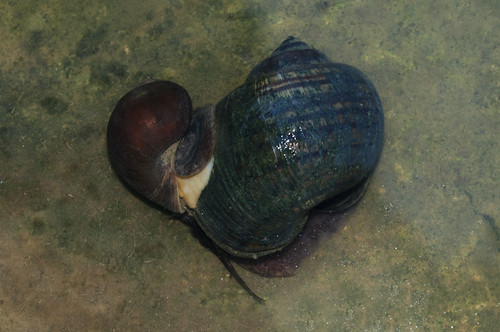

Top 10 Deadliest Animals
200,000 deaths per year
This one may surprise you. More than 200,000 deaths a year can be attributed to freshwater snails. This is because they are hosts to deadly parasites, in particular parasitic flatworms known as flukes.
There are as many as 24,000 species of flukes, and most of them are parasites of vertebrates (like us) and molluscs (like snails).
A particularly nasty one that is transmitted by freshwater snails is called Schistosoma. The flukes live and develop within the snail then are released into the water. Humans get infected from the contaminated freshwater as the flukes penetrate the skin.
This is responsible for a deadly human disease called schistosomiasis, also known as ‘snail fever’.
After malaria this is considered to be the second most “socioeconomically devastating” parasitic disease, and causes as many as 200,000 deaths a year, according to the World Health Organization (WHO) in 2000.
